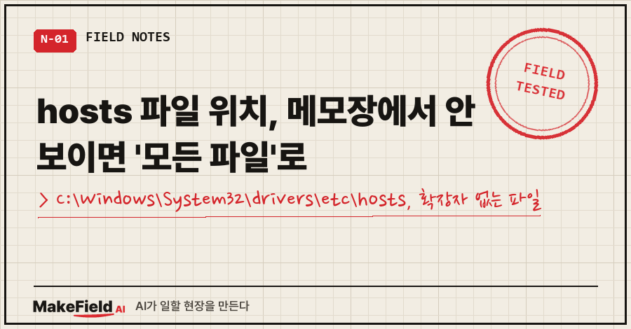
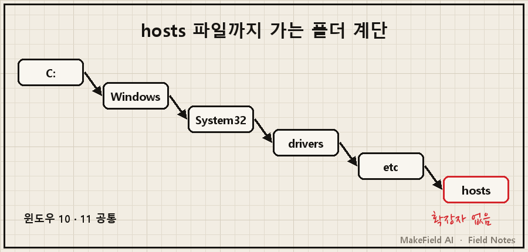
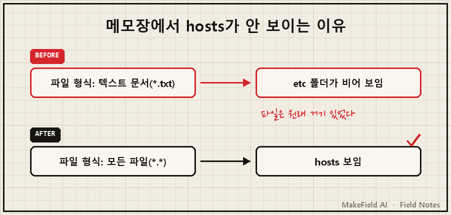
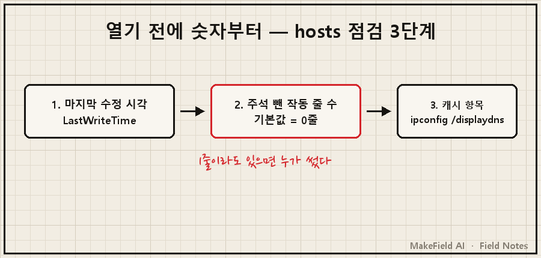

윈도우 10·11의 hosts 파일 위치는 C:\Windows\System32\drivers\etc\hosts 한 곳이고, 확장자가 없는 파일이라 메모장 열기 창에서는 '모든 파일(*.*)'로 바꿔야 보입니다. 수정해서 저장하려면 관리자 권한도 필요해요.
"폴더엔 갔는데 파일이 없다", "고쳤는데 저장이 안 된다"는 이 두 가지로 거의 풀려요. 2026년 10월 기준 마이크로소프트 공식 문서로 확인했습니다.
저는 공장 자동화 쪽에서 15년 일한 엔지니어예요. 지난달 노트북 보안 팝업 원인을 쫓다 이 파일을 직접 열었는데, 그때 쓴 방법만 추렸습니다.
1. hosts 파일 위치는 딱 한 곳이에요
hosts는 도메인 이름과 IP를 짝지어 적어두는 윈도우 기본 텍스트 파일입니다. 사이트에 접속할 때 PC는 DNS 서버보다 이 파일을 먼저 확인해요(→ https://learn.microsoft.com/en-us/windows/powertoys/hosts-file-editor).
경로는 이렇습니다.
C:\Windows\System32\drivers\etc\hosts윈도우가 C 드라이브가 아닌 곳에 깔렸다면 %WinDir%\System32\Drivers\Etc 로 쓰면 됩니다. 지원 문서도 두 표기를 같이 안내해요(→ https://support.microsoft.com/en-us/topic/how-to-reset-the-hosts-file-back-to-the-default-c2a43f9d-e176-c6f3-e4ef-3500277a6dae).

2. 폴더까지 갔는데 파일이 안 보이는 이유
제일 많이 막히는 데가 여기예요. 증상은 보통 이렇습니다.
- 메모장에서 파일 > 열기로 etc 폴더에 들어갔는데 목록이 텅 비어 보인다
- 고쳐서 저장하려니 거부되고, 다른 이름으로 저장하라고 한다
원인은 두 가지예요. 첫째, hosts 파일은 확장자를 가질 수 없습니다(지원 문서 원문 "A hosts file can't have a file extension"). 메모장 열기 창은 기본 필터가 텍스트 문서(*.txt)라서 확장자 없는 hosts를 걸러버려요. 둘째, System32 아래 파일은 일반 권한으로 고칠 수 없어서 관리자 권한이 필요합니다.

마이크로소프트 PowerToys hosts 편집기도 관리자가 아니면 Failed to save hosts file 을 띄운다고 공식 문서에 나와요. 도구를 바꿔도 권한 문제는 같습니다.
3. 여는 법과 고치는 법, 순서대로
보기만 할 거면 1번, 고칠 거면 2번부터 하면 됩니다.
- 탐색기로 위치 확인: 주소창에 아래를 붙여넣고 Enter.
hosts라는 확장자 없는 파일이 보이면 정상이에요.
%WinDir%\System32\Drivers\Etc- 고치기 전에 백업부터: 저는 날짜를 붙여 복사본을 남겼어요. 실제로 남긴 이름이
hosts.bak_20260913이었습니다. 되돌릴 일이 생기면 이 파일 하나로 끝나요.
Copy-Item C:\Windows\System32\drivers\etc\hosts "$env:USERPROFILE\Desktop\hosts.bak_$(Get-Date -Format yyyyMMdd)"- 관리자 권한으로 열기: 시작 버튼 우클릭 → Windows PowerShell(관리자), 윈도우 11은 터미널(관리자). 그 창에서 띄운 메모장은 저장이 막히지 않아요.
notepad C:\Windows\System32\drivers\etc\hosts- 수정 후 캐시 비우기: 윈도우는 hosts 내용을 DNS 캐시에 미리 올려두기 때문에(→ https://learn.microsoft.com/en-us/windows-server/administration/windows-commands/ipconfig), 고친 직후엔 캐시를 한 번 비워주는 게 확실합니다.
ipconfig /flushdns| 방법 | 열기 | 저장 | 이럴 때 |
|---|---|---|---|
| 탐색기 주소창 | 위치만 확인 | — | 파일이 있는지만 볼 때 |
| 일반 메모장 | 가능('모든 파일' 필요) | 막힘 | 내용만 읽을 때 |
| 관리자 창에서 메모장 | 가능 | 가능 | 항목을 고칠 때 |
| PowerToys hosts 편집기 | 가능 | 관리자일 때만 | 항목이 많을 때, 자동 백업 원할 때 |
4. 제대로 열었는지, 누가 건드렸는지 확인하는 법
위치를 찾는 이유가 "이 파일이 바뀌었나"라면, 열어보기 전에 아래 두 줄이 더 빨라요. 저도 그렇게 확인했습니다.
Get-Item C:\Windows\System32\drivers\etc\hosts | Select-Object LastWriteTime
Select-String -Path C:\Windows\System32\drivers\etc\hosts -Pattern '^\s*(#|$)' -NotMatch첫 줄은 마지막 수정 시각, 둘째 줄은 주석(#)과 빈 줄을 뺀 실제로 작동하는 줄만 뽑아요.
제 노트북에서 정리 작업을 마친 뒤 찍은 값은 마지막 수정 2026-09-13 18:13:49, 작동하는 줄 0줄이었어요. 재부팅이 19:03:48이었으니 부팅 뒤로는 아무도 안 건드렸다는 뜻이었죠.
0줄이 이상해 보일 수 있는데, 그게 정상입니다. 윈도우 기본 hosts는 localhost 줄까지 전부 #으로 주석 처리돼 있고, localhost 처리는 DNS 쪽에서 한다고 공식 문서에 나와 있어요. 그러니까 주석 아닌 줄이 한 줄이라도 나오면 누군가 써넣은 것이에요. 제 경우엔 처음 열었을 때 직접 깐 VPN 툴이 자기 구역을 만들어 기기 이름 네 개를 적어두고 있었고요..

캐시 쪽은 ipconfig /displaydns 로 봐요. hosts에서 올라온 항목이 같이 나옵니다.
5. 같은 증상, 다른 경우
hosts 파일 위치를 찾게 된 계기별로 이어지는 글을 묶어둡니다.
- 보안 프로그램이 "hosts 파일 변경이 탐지됐다, 복원할까요?"를 부팅마다 띄운다 → 제가 이 파일을 열게 된 사건이에요. 범인은 악성코드가 아니라 제가 깐 원격접속용 VPN 툴이었고, 프로그램을 지우지 않고 설정 한 줄로 끝냈습니다. 경위와 검증 과정은 따로 썼어요 → https://blog.naver.com/makefield_ai/224410743445
- 밖에서 집 PC로 원격 데스크톱이 안 붙는다 → hosts가 아니라 계정 잠금과 절전이 원인이었던 건이에요. 원인을 사양에서 찾다가 헛걸음한 과정까지 적었습니다 → https://blog.naver.com/makefield_ai/224410366627
- 위 명령을 .ps1 파일로 저장해 돌렸더니 한글이 깨진다 → 글꼴 문제가 아니라 파일 저장 방식(BOM) 문제예요 → https://blog.naver.com/makefield_ai/224414114233
이런 질문이 나올 것 같아서
Q. host 파일 위치랑 hosts 파일 위치, 다른 건가요?
같은 파일이에요. 실제 파일 이름은 끝에 s가 붙은 hosts이고, 확장자는 없습니다. 검색할 땐 어느 쪽으로 쳐도 같은 C:\Windows\System32\drivers\etc\hosts 를 가리켜요.
Q. etc 폴더에 hosts가 아예 없어요.
'모든 파일'로 바꿔도 없다면 파일이 지워졌거나 이름이 바뀐 경우예요. 마이크로소프트 지원 문서에 기본 내용을 메모장에 붙여 "hosts" 처럼 따옴표를 씌워 저장한 뒤 그 폴더로 옮기는 절차가 있습니다. 옮길 때 관리자 권한이 필요할 수 있어요.
Q. 고쳤는데 사이트가 그대로예요.
캐시에 예전 결과가 남아 있을 수 있어요. ipconfig /flushdns 후 브라우저를 껐다 켜 보세요. 그래도 같다면 위의 LastWriteTime 으로 저장이 실제로 됐는지부터 확인하는 게 빠릅니다.
경로 한 줄이지만, 저는 눈으로 훑기보다 수정 시각과 작동 줄 수를 숫자로 먼저 보는 것이 이번에 남은 소득이었어요. 여러분 hosts 파일엔 지금 주석 아닌 줄이 몇 줄 있나요?
PC 문제를 AI와 같이 짚어본 기록은 makefield.ai에서 이어서 볼 수 있어요.
출처
- Microsoft 지원, How to reset the Hosts file back to the default (Windows 10·11 — 경로, 확장자 없음, 모든 파일 저장, 기본 내용, 관리자 권한) → https://support.microsoft.com/en-us/topic/how-to-reset-the-hosts-file-back-to-the-default-c2a43f9d-e176-c6f3-e4ef-3500277a6dae
- Microsoft Learn, PowerToys Hosts File Editor (DNS보다 hosts 먼저 확인, 관리자 아니면 읽기 전용, "Failed to save hosts file", 백업 위치) → https://learn.microsoft.com/en-us/windows/powertoys/hosts-file-editor
- Microsoft Learn, ipconfig (/displaydns에 hosts 항목 포함, /flushdns) → https://learn.microsoft.com/en-us/windows-server/administration/windows-commands/ipconfig
- Microsoft Learn, Select-String (-NotMatch) → https://learn.microsoft.com/en-us/powershell/module/microsoft.powershell.utility/select-string
태그: #hosts파일위치 #host파일위치 #hosts파일열기 #hosts파일수정 #hosts파일관리자권한 #hosts파일메모장 #hosts파일안보임 #driversetc #윈도우hosts #윈도우11hosts #윈도우10hosts #ipconfigflushdns #PC보안점검 #AI로PC점검 #MakeFieldAI